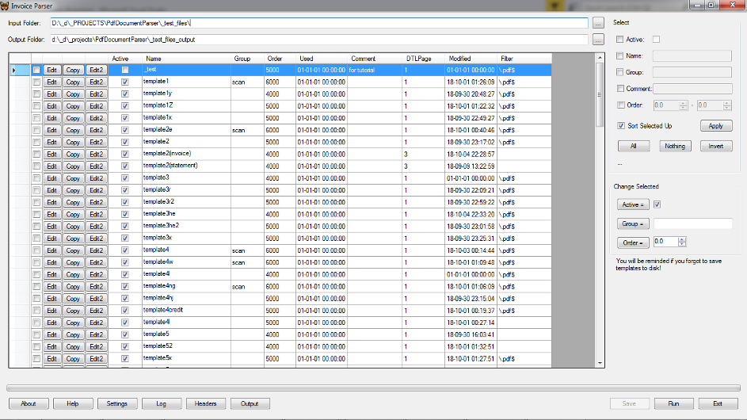

Overview
Invoice Parser is a custom application based on PdfDocumentParser. Assumptions
- by default, a PDF file can contain documents of the same type only. However, it can be tuned for every template individually;
- once detected, a document is considered continued until the next document begins or the file ends;
Enhanced template parameters
| Parameter | Description |
|---|---|
| Active | Inactive template is ignored while parsing. |
| Group | An optional mark that can be helpful for managing templates. |
| Order | A weight indicating template's order in check line. It is intended to reduce processing time. Templates with the less order are tried first. |
| DTLPage | The last page in PDF files that is to be checked for this template. It is intended to reduce processing time. |
| Filter | It is a Regex applied to PDF file path to recognize the proper template. Optional. It is intended to reduce processing time. |
| SFTRegex | It is a Regex that matches to names of templates that can share the same PDF file. By default it is NULL meaning that such a template if chosen for processing a PDF file cannot be changed for this file. |
Considerations
When processing documents InvoiceParser applies every active template to every new document to recognize a proper template. So, if you have 50 templates and 1000 files evenly distributed for templates, InvoiceParser will do on average 1000/2 *50 = 25,000 template tries. It may take a considerable time especially when templates use OCR. Processing time can be reduced by the following ways:
- specify file filters for templates. If it can be done then the other tips are not needed;
- specify template orders so that templates that require a longer time for recognition have a higher order. E.g. templates that use auto-deskew should be checked in the last place;
- keep templates that are known as not corresponding to the files to be processed right now, inactive;